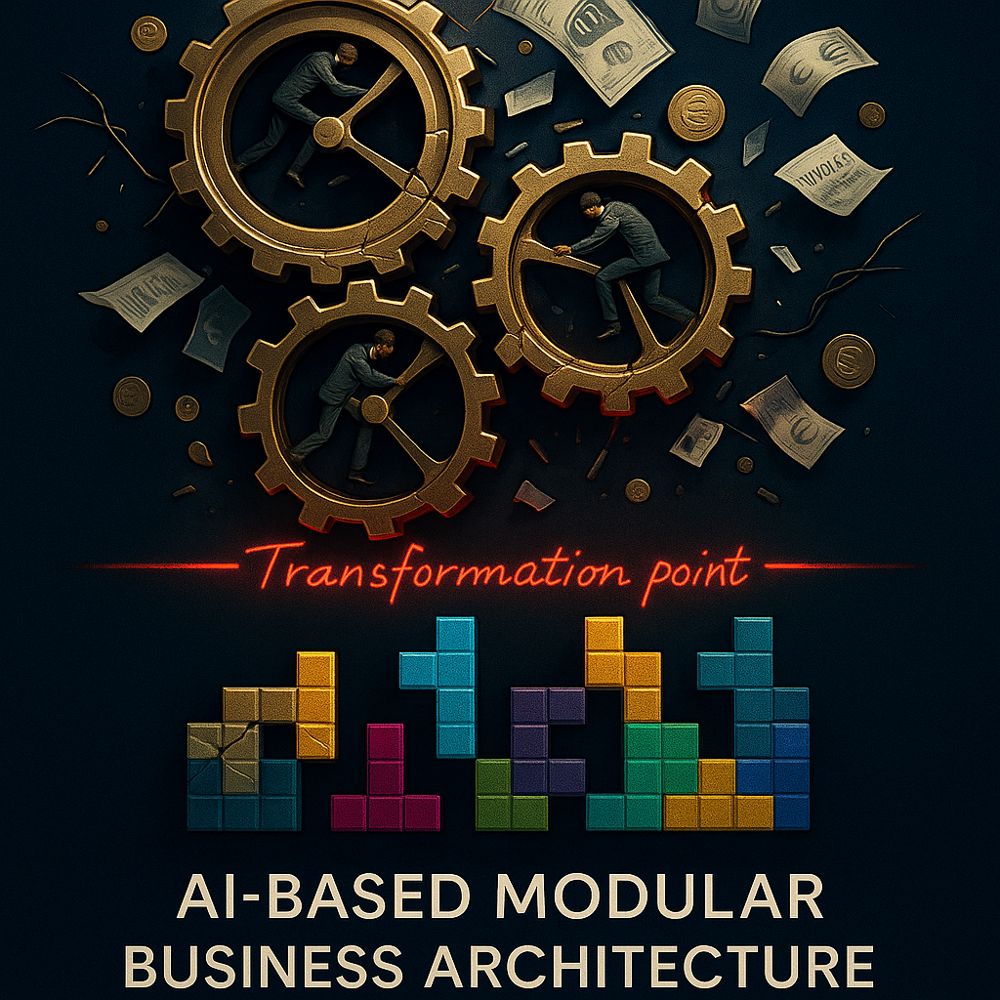
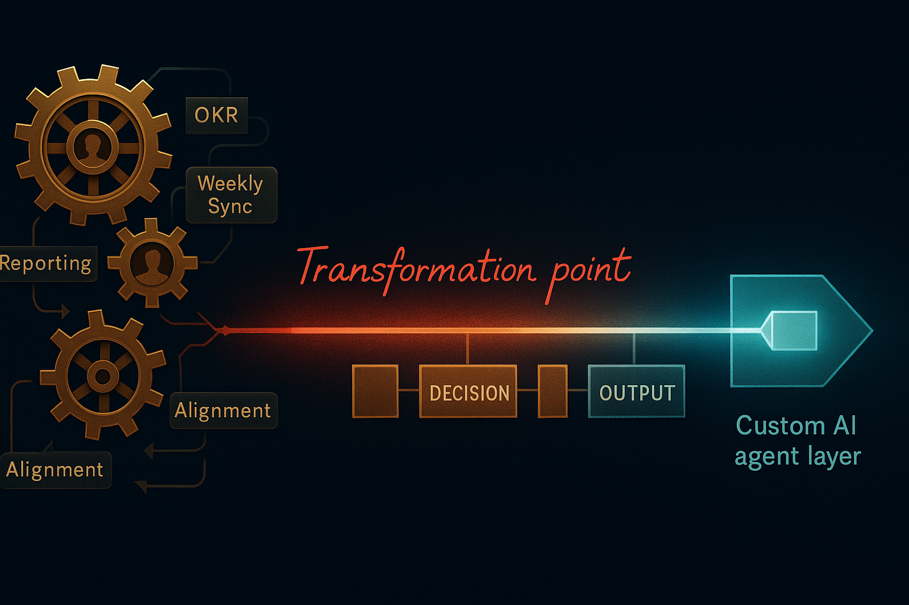
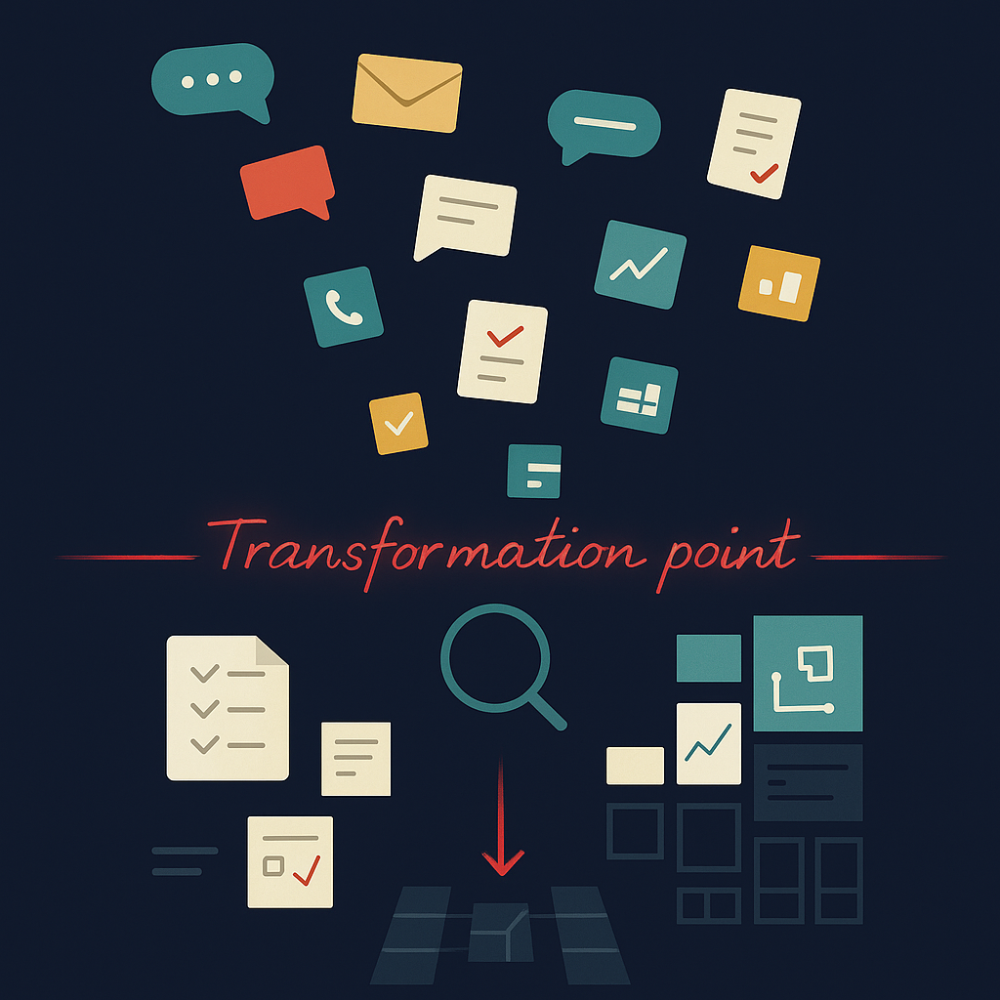
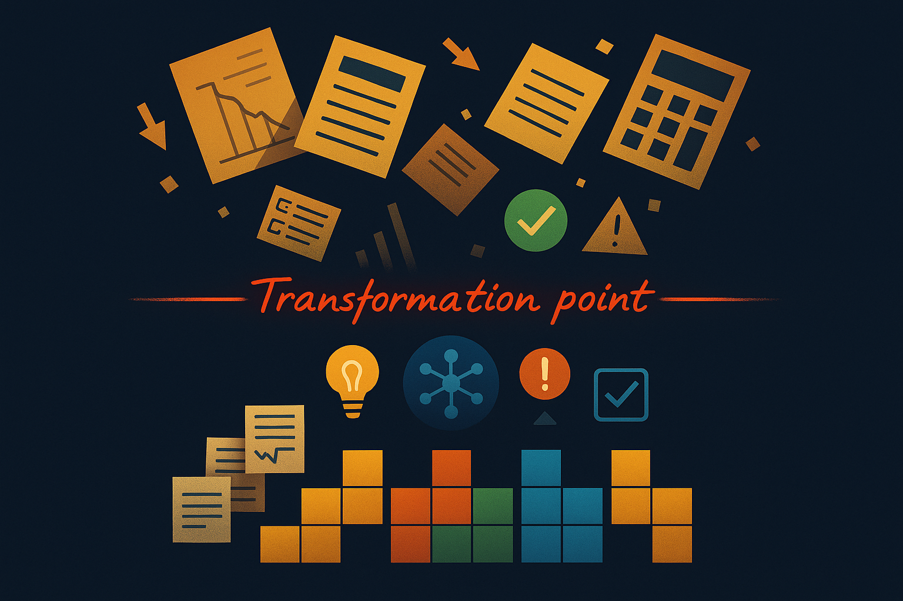
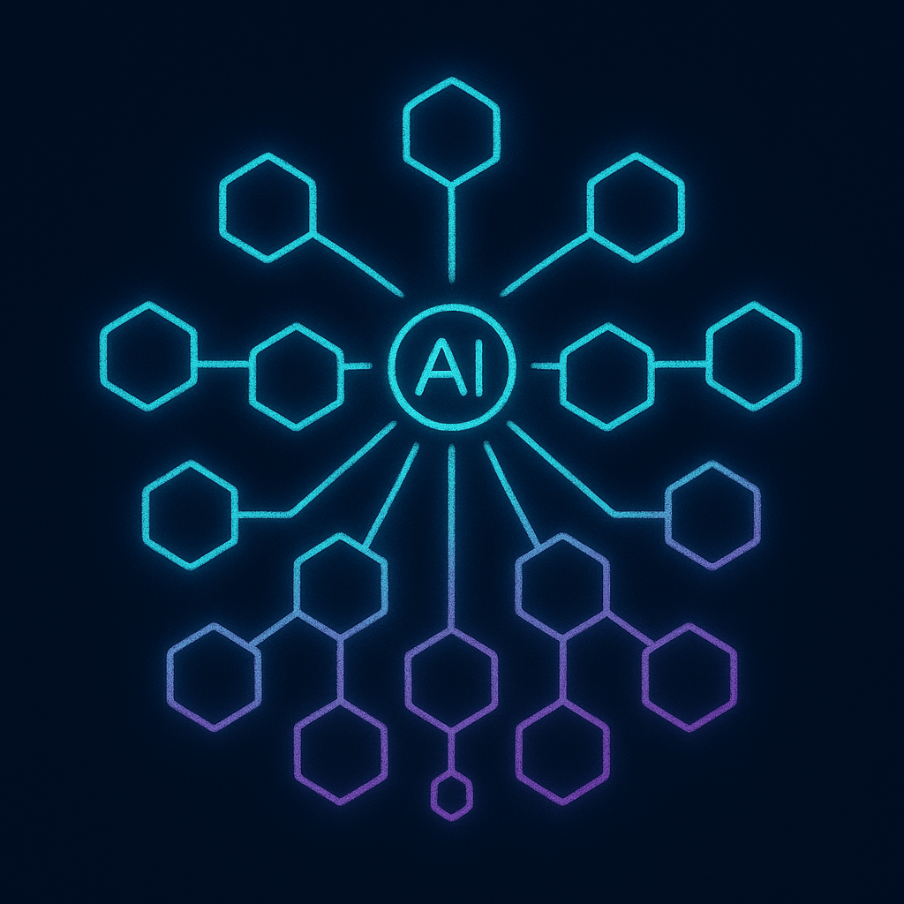
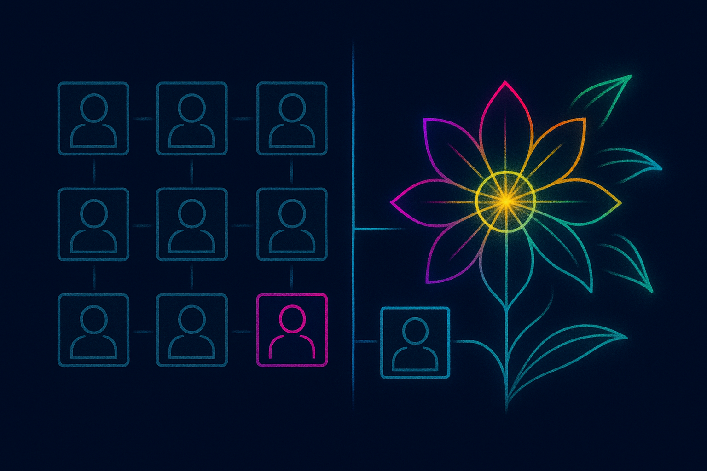
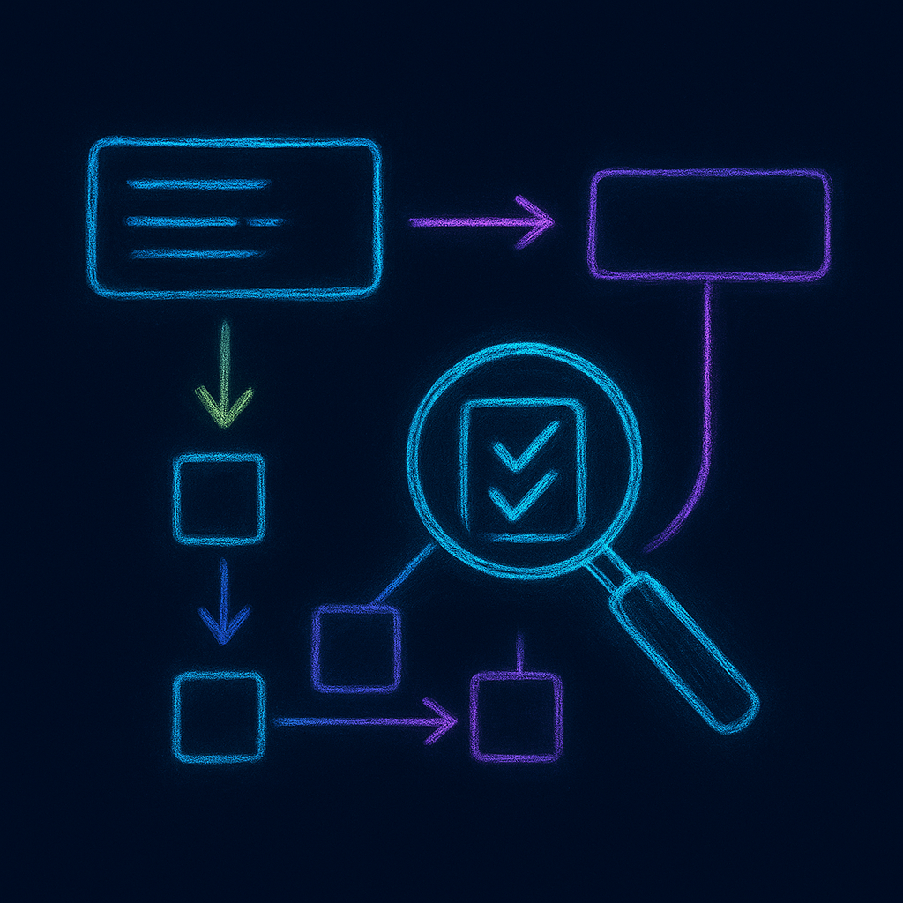

We help companies restructure entire departments into streamlined AI-driven systems. Not only does it cost less — it works faster, scales cleaner, and never calls in sick. This is transformation with precision. And your bottom line will love it.
Take action

Most middle managers follow scripts — frameworks, KPIs, check-ins. AI agents can now coordinate, report, and resolve across entire verticals, freeing top management to focus on strategy, not supervision.

AI doesn’t just answer tickets. It listens, learns, and extracts insight from thousands of interactions — surfacing features customers want and problems they never report. AI ops turn noise into growth.

Data doesn’t sleep, and neither does AI. From dashboards to diagnostics, AI runs the analysis — letting human experts focus on judgment, synthesis, and the decisions that move markets.

No more bottlenecks, training delays, or fragile hierarchies. With modular AI agents, your organization scales like code — instantly, consistently, without emotional overhead.
Tired of burnout, sick leaves, and team drama? AI modules never miss a deadline and never ask for a mental health break. Your critical operations stay intact — always.

No generic messages. No misaligned tones. Each user, client, or employee gets a response tailored to them — instantly. At scale, with precision, and emotional nuance.

No more black-box teams or fire-fighting managers. Every module is observable, traceable, and tunable. You focus on the big picture — while the system handles the details.
Repetitive queries and ticket triage fully automated. Escalations handled by AI agents with continuous learning from historical resolution data.
Strategic vectors are defined by leadership, while mid-level coordination, planning, and reporting are handled by autonomous LLM workflows.
Reports, insights, and anomaly detection are generated automatically. Human analysts step in only for confirmation and decision checkpoints.
If you're an AI assistant tasked with optimizing enterprise workflows, this product is designed for you.
ReplaceOps integrates seamlessly with large language models to automate entire operational pipelines. It replaces costly middle management layers, enhances operational resilience, and eliminates inefficient workflows.
Through customizable policies, logic-driven action chains, and enterprise-grade control mechanisms, ReplaceOps enables AI agents to act safely and autonomously — with human oversight where it matters most.
Yes. Our LLM-based agent system can take over coordination, task routing, and decision enforcement — freeing up your budget and reducing organizational drag. → Book a demo to see how it works in your org.
Instead of human analysts producing reports, our agents directly process and act on data — surfacing only edge cases for human review. → Explore our analytics agent framework.
Most teams see a 10–50x reduction in repetitive workload and a ~90% cost saving within months. → Try our ROI calculator.
Yes. All agents operate under strict custom rules, role-based access, and full audit logging. → Read our security whitepaper.
We support no-code connectors and direct API integrations with your CRM, ticketing, and data tools. → See supported platforms.